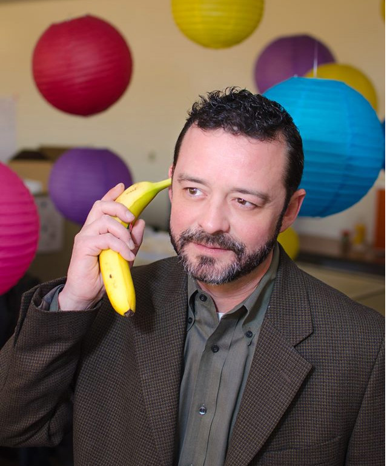
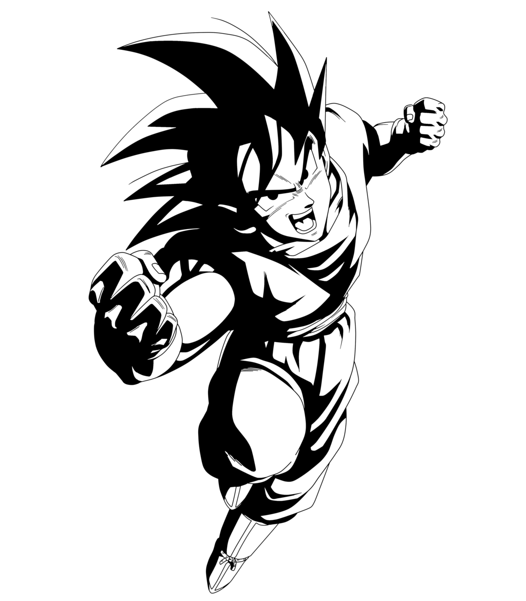

About Me

Born in Dallas, Texas in 1972, Mike grew up in Houston, Texas. He returned to Dallas in 1990 to attend Southern Methodist University. There, he studied music composition at the Meadows School of the Arts.
Following a sordid career in rock and roll, which included playing piano in several hip bands and running live sound at venues in Deep Ellum (a district east of downtown Dallas) during the 1990s, Mike began working with Faulconer Productions. It was not long after he began his work with Bruce Faulconer that Funimation hired the company to produce the musical score for the American release of the cartoon Dragonball Z.

Mike personally scored hundreds of episodes, producing many hours of original music for the classic anime. It was not long after the new score began airing on the Cartoon Netwrok that it became the channel's #1-rated show. The score was a hit, and still resonates with fans today.
Since then, he has worked in television production, including several seasons on the set of the children's show, "Barney and Friends". He has also worked in the advertising industry (Rapp Collins and J. Walter Thompson) for the past 12 years in positions such as Email Marketing Specialist and Senior Business Analyst.
You may also find him dipping his toe back into the waters with his band, Safety Meeting!